2019.4～ ネフォンクリーチャー パッシブ性能一覧
ネフォンクリーチャー(コクーン)って？
各クリーチャーのステータス詳細(2019.3までの性能込)
[1] クリーチャーごとのスキル一覧
[2] 各パッシブの性能一覧
[1] クリーチャーごとのスキル一覧
| アイコン | ランク | クリーチャー名 | メイン | Lv | サブ１ | Lv | サブ２ | Lv |
|---|---|---|---|---|---|---|---|---|
| N | ブリザード火炎犬 | 攻撃力 | 8 | 経験値 | 4 | 体力吸収 | 4 | |
| N | 青の火炎犬 | ドロップ率 | 8 | 回避率 | 4 | ドロップ率 | 4 | |
| N | 緑の火炎犬 | 火低下 | 8 | 被ダメージ反射 | 4 | 火強化 | 4 | |
| N | 紫の火炎犬 | 火抵抗力 | 8 | 火強化 | 4 | 抵抗力低下防止 | 4 | |
| N | 灰色の火炎犬 | 最大CP | 8 | 能力値低下防止 | 4 | 最大体力 | 4 | |
| N | 赤の火炎犬 | 攻撃力 | 8 | 攻撃力 | 4 | 動物型ダメージ | 4 | |
| 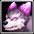 | N | 紫の閃光犬 | クリティカル確率 | 8 | クリティカルダメージ | 4 | スキル | 4 |
| 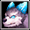 | N | 水色の閃光犬 | 最大体力 | 8 | 防御力 | 4 | 体力吸収 | 4 |
 |
N | 赤の閃光犬 | 火強化 | 8 | 神獣型ダメージ | 4 | 火低下 | 4 |
| N | 青の閃光犬 | 大地抵抗力 | 8 | クリティカルダメージ減少 | 4 | 火抵抗力 | 4 | |
| N | 変異火炎犬 | ペット&召喚獣強化 | 8 | ペット&召喚獣体力 | 4 | ペット&召喚獣全てのステータス | 4 | |
| N | 乙女ミニゴースト | 状態異常抵抗力 | 8 | ドロップ率 | 4 | 最大CP | 4 | |
| N | 海ミニゴースト | 闇低下 | 8 | 全ての属性抵抗 | 4 | 闇強化 | 4 | |
| N | 森ミニゴースト | 闇抵抗力 | 8 | 闇強化 | 4 | 闇低下 | 4 | |
| N | 崖ミニゴースト | 攻撃力 | 8 | 被魔法ダメージ吸収 | 4 | 命中率 | 4 | |
| N | 岩ミニゴースト | スキル | 8 | スキル | 4 | 最大CP | 4 | |
| N | 砂漠ミニゴースト | 回避率 | 8 | 火抵抗力 | 4 | 移動速度 | 4 | |
| N | 滝ミニゴースト | 闇強化 | 8 | 攻撃速度 | 4 | 闇低下 | 4 | |
| N | 平原ミニゴースト | 最大体力 | 8 | クリティカルダメージ減少 | 4 | 悪魔型ダメージ | 4 | |
| N | 紳士ミニゴースト | 移動速度 | 8 | 被魔法ダメージ吸収 | 4 | 攻撃力 | 4 | |
| N | 墓地ミニゴースト | クリティカル確率 | 8 | 水抵抗力 | 4 | クリティカルダメージ | 4 | |
| N | 地下ミニゴースト | 防御力 | 8 | 闇抵抗力 | 4 | 被ダメージ反射 | 4 | |
| N | 強欲のゴーレム | 光抵抗力 | 8 | クリティカル確率 | 4 | 光低下 | 4 | |
| N | 忘却のゴーレム | 光強化 | 8 | 光強化 | 4 | 動物型ダメージ | 4 | |
| N | 貪欲のゴーレム | 回避率 | 8 | 能力値低下防止 | 4 | 光抵抗力 | 4 | |
| N | 祝福のゴーレム | 攻撃速度 | 8 | クリティカルダメージ | 4 | 防御力 | 4 | |
| N | 勇気のゴーレム | 最大体力 | 8 | 最大体力 | 4 | ドロップ率 | 4 | |
| N | 正義のゴーレム | 経験値 | 8 | 大地抵抗力 | 4 | 被ダメージ反射 | 4 | |
| N | 不屈のゴーレム | 大地抵抗力 | 8 | 攻撃力 | 4 | 経験値 | 4 | |
| N | 幸福のゴーレム | ペット&召喚獣強化 | 8 | ペット&召喚獣全てのステータス | 4 | ペット&召喚獣攻撃力 | 4 | |
| N | 希望のゴーレム | 移動速度 | 8 | アンデッド型ダメージ | 4 | 体力吸収 | 4 | |
| N | 憤怒のゴーレム | 光低下 | 8 | 移動速度 | 4 | 光強化 | 4 | |
| N | 復讐のゴーレム | ドロップ率 | 8 | 光抵抗力 | 4 | 状態異常抵抗力 | 4 | |
| N | レビット | 水強化 | 8 | 水低下 | 4 | アンデッド型ダメージ | 4 | |
| N | リビット | 水低下 | 8 | 抵抗力低下防止 | 4 | 水強化 | 4 | |
| N | ルビット | 水抵抗力 | 8 | 回避率 | 4 | 被魔法ダメージ吸収 | 4 | |
| N | ロビット | 最大体力 | 8 | 防御力 | 4 | 状態異常抵抗力 | 4 | |
| N | ブビット | 最大CP | 8 | ペット&召喚獣強化 | 4 | 水抵抗力 | 4 | |
| N | レイット | 水強化 | 8 | 水低下 | 4 | スキルクールタイム減少 | 4 | |
| N | ルイット | ペット&召喚獣全てのステータス | 8 | ペット&召喚獣体力 | 4 | 風抵抗力 | 4 | |
| N | ロイット | 防御力 | 8 | 攻撃速度 | 4 | 神獣型ダメージ | 4 | |
| N | ライット | スキル | 8 | 攻撃力 | 4 | 防御力 | 4 | |
| N | レビント | 水低下 | 8 | 水強化 | 4 | 被ダメージCPに変換 | 4 | |
| N | ルビント | 命中率 | 8 | クリティカル確率 | 4 | 闇抵抗力 | 4 | |
| N | 花霊アサガオ | 大地強化 | 8 | 被ダメージCPに変換 | 4 | 最大CP | 4 | |
 |
N | 花霊ローズ | 攻撃力 | 8 | 状態異常抵抗力 | 4 | クリティカルダメージ | 4 |
| N | 花霊スミレ | 状態異常抵抗力 | 8 | 最大体力 | 4 | 悪魔型ダメージ | 4 | |
 |
N | 花霊ベル | 大地低下 | 8 | 大地強化 | 4 | 大地抵抗力 | 4 |
| N | 花霊ナノハ | 風抵抗力 | 8 | 命中率 | 4 | 全ての属性抵抗 | 4 | |
| N | 花霊カスミ | 被ダメージ反射 | 8 | ペット&召喚獣全てのステータス | 4 | ペット&召喚獣状態異常抵抗 | 4 | |
| N | 花霊ノウゼン | 風強化 | 8 | 最大CP | 4 | 風低下 | 4 | |
 |
N | 花霊ワスレナ | 攻撃速度 | 8 | 最大体力 | 4 | 大地低下 | 4 |
| N | 花霊アマドコロ | 風低下 | 8 | 風抵抗力 | 4 | 風強化 | 4 | |
| N | 花霊ウィロウ | 経験値 | 8 | 攻撃力 | 4 | 火抵抗力 | 4 | |
| N | 花霊アイリス | 被魔法ダメージ吸収 | 8 | 風強化 | 4 | 移動速度 | 4 | |
| R | 黄昏のフレア | 火低下 | 16 | 回避率 | 8 | 火強化 | 8 | |
| R | 堕落のフレア | 水低下 | 16 | 水強化 | 8 | 最大CP | 8 | |
| R | 呪いのフレア | 風低下 | 16 | 全ての属性抵抗 | 8 | 風強化 | 8 | |
| R | 暗闇のフレア | 水強化 | 16 | 水抵抗力 | 8 | 水低下 | 8 | |
| R | 地獄のフレア | 状態異常抵抗力 | 16 | 攻撃速度 | 8 | 悪魔型ダメージ | 8 | |
| R | ボーンナイト | 闇抵抗力 | 16 | 最大体力 | 8 | 防御力 | 8 | |
| R | ボーンウォリアー | 大地強化 | 16 | 防御力 | 8 | 大地強化 | 8 | |
| R | ボーンヒーロー | 闇低下 | 16 | 闇強化 | 8 | 経験値 | 8 | |
| R | ボーンソルジャー | 防御力 | 16 | 攻撃力 | 8 | 被ダメージ反射 | 8 | |
| R | ボーンシーフ | 闇強化 | 16 | スキルクールタイム減少 | 8 | 闇低下 | 8 | |
| R | 空色のルジュエ | 被ダメージ反射 | 16 | 最大体力 | 8 | ドロップ率 | 8 | |
| R | 血色のルジュエ | 火強化 | 16 | 火低下 | 8 | スキル | 8 | |
| R | リボンのルジュエ | 移動速度 | 16 | クリティカルダメージ | 8 | 命中率 | 8 | |
| 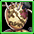 | R | 太糸のルジュエ | 回避率 | 16 | 移動速度 | 8 | 神獣型ダメージ | 8 |
| R | ルジュエ | 最大CP | 16 | ドロップ率 | 8 | 攻撃速度 | 8 | |
| R | ヴィド | 大地抵抗力 | 16 | 被ダメージCPに変換 | 8 | 攻撃力 | 8 | |
| R | モヒカンキャロ | ドロップ率 | 16 | 経験値 | 8 | クリティカルダメージ減少 | 8 | |
| R | リーゼントキャロ | クリティカルダメージ | 16 | クリティカル確率 | 8 | 動物型ダメージ | 8 | |
| R | アフロキャロ | 風強化 | 16 | 風低下 | 8 | 状態異常抵抗力 | 8 | |
| R | ファフ | 全ての属性抵抗 | 16 | 光強化 | 8 | 能力値低下防止 | 8 | |
| R | ポフ | 光低下 | 16 | アンデッド型ダメージ | 8 | 光強化 | 8 | |
| R | パフ | 火強化 | 16 | 火低下 | 8 | 火抵抗力 | 8 | |
| R | プフ | 大地低下 | 16 | 大地抵抗力 | 8 | 大地強化 | 8 | |
| R | レッドアブソル | クリティカル確率 | 16 | クリティカルダメージ | 8 | 全ての属性抵抗 | 8 | |
| 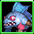 | R | ブルーアブソル | 攻撃力 | 16 | 体力吸収 | 8 | 水抵抗力 | 8 |
 |
R | グリーンアブソル | 大地強化 | 16 | 大地抵抗力 | 8 | 大地低下 | 8 |
| 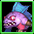 | R | パープルアブソル | 防御力 | 16 | 被魔法ダメージ吸収 | 8 | 被ダメージ反射 | 8 |
| 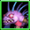 | R | ロードアブソル | クリティカル確率 | 16 | スキル | 8 | 火抵抗力 | 8 |
| R | 強靭なヒヨコ戦士 | 攻撃速度 | 16 | 体力吸収 | 8 | 風抵抗力 | 8 | |
| R | 強運のヒヨコ戦士 | クリティカル確率 | 16 | 最大CP | 8 | 攻撃速度 | 8 | |
| R | 賢明なヒヨコ戦士 | 光強化 | 16 | 光低下 | 8 | アンデッド型ダメージ | 8 | |
| 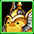 | R | 疾風のヒヨコ戦士 | 大地強化 | 16 | 最大体力 | 8 | 大地低下 | 8 |
| R | 壮健なヒヨコ戦士 | クリティカルダメージ減少 | 16 | クリティカル確率 | 8 | 光抵抗力 | 8 | |
| R | ワイアットピグ | 最大体力 | 16 | 風抵抗力 | 8 | 全ての属性抵抗 | 8 | |
| R | コリントピグ | 火強化 | 16 | 火低下 | 8 | スキル | 8 | |
| R | フィルバートピグ | 風強化 | 16 | 風低下 | 8 | クリティカルダメージ減少 | 8 | |
| R | メイソンピグ | ペット&召喚獣体力 | 16 | ペット&召喚獣状態異常抵抗 | 8 | ペット&召喚獣強化 | 8 | |
| 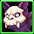 | R | 骸骨仮面バット | 被ダメージCPに変換 | 16 | 防御力 | 8 | 抵抗力低下防止 | 8 |
| R | ピエロ仮面バット | 命中率 | 16 | 闇強化 | 8 | 闇低下 | 8 | |
| 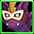 | R | 舞台仮面バット | 状態異常抵抗力 | 16 | 攻撃力 | 8 | クリティカルダメージ | 8 |
 |
R | トガリ仮面バット | ペット&召喚獣攻撃力 | 16 | ペット&召喚獣攻撃力 | 8 | ペット&召喚獣全てのステータス | 8 |
| R | ピンクチビット | スキル | 16 | 火強化 | 8 | クリティカル確率 | 8 | |
| R | ブルーチビット | 最大体力 | 16 | 状態異常抵抗力 | 8 | 経験値 | 8 | |
| R | グリーンチビット | ペット&召喚獣状態異常抵抗 | 16 | ペット&召喚獣強化 | 8 | ペット&召喚獣体力 | 8 | |
| R | オレンジチビット | クリティカルダメージ | 16 | 防御力 | 8 | 命中率 | 8 | |
| R | 花精マリアカラス | 攻撃力 | 16 | 体力吸収 | 8 | 状態異常抵抗力 | 8 | |
 |
R | 花精シャルル | ペット&召喚獣強化 | 16 | ペット&召喚獣全てのステータス | 8 | 攻撃速度 | 8 |
| R | 花精サンブライト | 経験値 | 16 | 移動速度 | 8 | 水低下 | 8 | |
| R | 花精ブルームーン | スキル | 16 | 神獣型ダメージ | 8 | 体力吸収 | 8 | |
| R | ブラウンモス | 火抵抗力 | 16 | 攻撃力 | 8 | 被魔法ダメージ吸収 | 8 | |
| R | バイオレットモス | 水抵抗力 | 16 | 水強化 | 8 | 能力値低下防止 | 8 | |
| R | オリーブモス | 風抵抗力 | 16 | 最大体力 | 8 | 抵抗力低下防止 | 8 | |
| R | ミュータントモス | 大地抵抗力 | 16 | 悪魔型ダメージ | 8 | 闇抵抗力 | 8 | |
| R | パープルエリーズ | クリティカル確率 | 16 | 経験値 | 8 | 水抵抗力 | 8 | |
| R | ブルーエリーズ | 光抵抗力 | 16 | 攻撃力 | 8 | 神獣型ダメージ | 8 | |
| R | レッドエリーズ | ペット&召喚獣攻撃力 | 16 | ペット&召喚獣状態異常抵抗 | 8 | ペット&召喚獣体力 | 8 | |
| R | グリーンエリーズ | 移動速度 | 16 | 被ダメージ反射 | 8 | 火抵抗力 | 8 | |
| R | チャンピオンマモ | 攻撃力 | 16 | アンデッド型ダメージ | 8 | 光強化 | 8 | |
| R | チャンピオンシマ | ペット&召喚獣全てのステータス | 16 | ペット&召喚獣攻撃力 | 8 | ペット&召喚獣体力 | 8 | |
| R | チャンピオンモモ | 最大体力 | 16 | 闇抵抗力 | 8 | 体力吸収 | 8 | |
| R | チャンピオンジリ | 最大CP | 16 | クリティカル確率 | 8 | ドロップ率 | 8 | |
| HR | コボルト大魔導師 | 火低下 | 24 | 火強化 | 12 | 魔法攻撃力強化 | 3 | |
| HR | ウィッチマゴ | 光低下 | 24 | 光強化 | 12 | 魔法強打 | 3 | |
| HR | ドレアス | 水低下 | 24 | 水強化 | 12 | 水抵抗力 | 12 | |
| 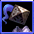 | HR | ナイトスピア | アンデッド型ダメージ | 24 | 上級状態異常抵抗力 | 3 | 闇抵抗力 | 12 |
| 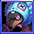 | HR | ドベルト | 動物型ダメージ | 24 | クリティカル確率 | 12 | PVP防御力 | 3 |
| HR | タイムシュラット | スキルクールタイム減少 | 24 | 被ダメージ反射 | 12 | 風抵抗力 | 12 | |
| 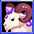 | HR | エマティース | 大地低下 | 24 | 大地強化 | 12 | 最大CP | 12 |
| HR | トゥルイク | 悪魔型ダメージ | 24 | PVP防御力 | 3 | 上級攻撃力 | 3 | |
| 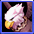 | HR | グリフォン | 風低下 | 24 | 風強化 | 12 | 上級最大CP | 3 |
| HR | マスクグール | 闇低下 | 24 | 闇強化 | 12 | 与魔法ダメージ吸収 | 3 | |
| HR | 泣き虫ルドルフ | ドロップ率 | 24 | PVP攻撃力 | 3 | 命中率 | 12 | |
| HR | クリスマスフェアリー | ペット&召喚獣体力 | 24 | 経験値 | 12 | ペット&召喚獣強化 | 12 | |
| HR | フォクシーテール | 経験値 | 24 | 人間型魔法ダメージ | 3 | 魔法攻撃力強化 | 3 | |
| HR | ハウンデブル | 被ダメージ反射 | 24 | 被ダメージCPに変換 | 12 | 火抵抗力 | 12 | |
| HR | ペンギン大佐 | 回避率 | 24 | 上級防御力 | 3 | 風抵抗力 | 12 | |
| HR | プリンセスルーナ | 被魔法ダメージ吸収 | 24 | 人間型ダメージ | 3 | 抵抗力低下防止 | 12 | |
| HR | クマーン | 防御力 | 24 | 強打 | 3 | 全ての属性抵抗 | 12 | |
| HR | 見習い魔女リトル | クリティカルダメージ減少 | 24 | 上級体力 | 3 | 能力値低下防止 | 12 | |
| 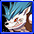 | HR | ライカンスロープ | 神獣型ダメージ | 24 | 敵致命打減少 | 3 | 被ダメージ反射 | 12 |
| HR | キングクレバネット | 経験値 | 24 | 体力吸収 | 12 | 上級攻撃速度 | 3 | |
| HR | ガイア | 闇低下 | 24 | 魔法強打 | 3 | 光抵抗力 | 12 | |
| HR | トリックスター | 状態異常抵抗力 | 24 | 防御力 | 12 | 人間型ダメージ抵抗 | 3 | |
| HR | ドリーマー | 命中率 | 24 | 上級攻撃力 | 3 | 攻撃速度 | 12 | |
| 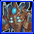 | HR | ノーマド | 回避率 | 24 | 大地抵抗力 | 12 | 魔法攻撃力低下 | 3 |
| HR | シッティングダイル | 攻撃速度 | 24 | クリティカルダメージ | 12 | 回避率 | 12 | |
| HR | メラニー | ペット&召喚獣強化 | 24 | ペット&召喚獣全てのステータス | 12 | 最大CP | 12 | |
| HR | シーウォーカー | 最大体力 | 24 | ダブルクリティカルダメージ | 3 | 最大体力 | 12 | |
| HR | カイザー | スキル | 24 | 上級状態異常抵抗力 | 3 | 魔法致命打 | 3 | |
| HR | クレア | 攻撃力 | 24 | クリティカルダメージ減少 | 12 | ドロップ率 | 12 | |
| HR | サキュバスヴェラ | スキル | 24 | 経験値 | 12 | 上級スキル | 3 | |
| HR | ヴィーナス | ペット&召喚獣攻撃力 | 24 | 最大体力 | 12 | 人間型ダメージ | 3 | |
| HR | イフリート | 火強化 | 24 | 火抵抗力 | 12 | 被ダメージをCPに変換 | 12 | |
 |
HR | かんがえるさかな | 経験値 | 24 | 水抵抗力 | 12 | 体力吸収 | 12 |
| HR | ブラックウィドー | 能力値低下防止 | 24 | 魔法攻撃力強化 | 3 | ペット&召喚獣の強打確率 | 12 | |
| HR | ホワイトレディー | 抵抗力低下防止 | 24 | 上級攻撃力 | 3 | ペット&召喚獣の強打確率 | 12 | |
| HR | プチデリン | 攻撃力 | 24 | 火抵抗力 | 12 | 命中率 | 12 | |
| HR | プチダリン | ドロップ率 | 24 | 魔法攻撃力強化 | 3 | ペット&召喚獣全てのステータス | 12 | |
| SR | インキュバス | 上級スキル | 10 | 魔法攻撃力低下 | 5 | 闇強化 | 16 | |
| SR | 吸血姫 | 体力吸収 | 32 | スキル | 16 | 上級攻撃力 | 5 | |
| SR | アイスクイーン | ペット&召喚獣強化 | 32 | PVP防御力 | 5 | 人間型魔法ダメージ | 5 | |
| SR | ラストウィッチ | 魔法致命打 | 10 | 与魔法ダメージ吸収 | 5 | 火強化 | 16 | |
| SR | ラミア | クリティカルダメージ | 32 | PVP攻撃力 | 5 | 回避率 | 16 | |
| SR | サンタレビット | ドロップ率 | 32 | 強打 | 5 | 最大体力 | 16 | |
| SR | レオフォールド | ペット&召喚獣全てのステータス | 32 | PVP防御力 | 5 | ペット&召喚獣状態異常抵抗 | 16 | |
| 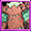 | SR | メリアス | 強打 | 10 | 上級体力 | 5 | 大地強化 | 16 |
 |
SR | コモルコクーン | 能力値低下防止 | 32 | 人間型ダメージ抵抗 | 5 | 移動速度 | 16 |
| SR | マートン所長 | クリティカル確率 | 32 | 敵致命打減少 | 5 | 上級攻撃速度 | 5 | |
| SR | スペクター | 能力値低下防止 | 32 | 上級防御力 | 5 | 命中率 | 16 | |
| SR | パンプキンナイト | 上級攻撃速度 | 10 | 上級最大CP | 5 | 被ダメージ反射 | 16 | |
| SR | アサシン | 攻撃速度 | 16 | 強打 | 5 | PVP防御 | 10 | |
| SR | アーチャー | 上級最大CP | 10 | 全ての属性抵抗 | 16 | 経験値 | 16 | |
| 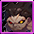 | SR | バーサーカー | 被ダメージCPに変換 | 32 | 上級体力 | 5 | クリティカルダメージ減少 | 16 |
| SR | ランサー | 全属性抵抗 | 32 | ドロップ率 | 16 | スキル | 16 | |
 |
SR | ケンタウロスナイト | 上級状態異常抵抗力 | 10 | 上級攻撃力 | 5 | 上級状態異常抵抗力 | 5 |
| SR | クレセンティ | 光低下 | 32 | 上級スキル | 5 | 上級最大CP | 5 | |
| SR | オーロラ | 闇低下 | 32 | 魔法攻撃力強化 | 5 | 人間型魔法ダメージ | 5 | |
| SR | アレクサンダ | 敵致命打減少 | 10 | 攻撃力 | 16 | クリティカルダメージ | 16 | |
| SR | マキュリア | 水低下 | 32 | 魔法致命打 | 5 | 水強化 | 16 | |
| SR | ラクネーラ | 人間型魔法ダメージ | 10 | 魔法致命打 | 5 | 水強化 | 16 | |
| SR | 橘 清音 | クリティカル確率 | 32 | 上級攻撃速度 | 5 | 命中率 | 16 | |
| SR | 枇々木 丈 | クリティカルダメージ | 32 | 上級攻撃力 | 5 | 最大体力 | 16 | |
| SR | 宮 うつつ | 上級最大CP | 10 | 状態異常抵抗力 | 16 | 経験値 | 16 | |
| SR | 爾乃美家 累 | 人間型魔法ダメージ | 5 | スキル | 16 | 被ダメージをCPに変換 | 16 | |
| SR | シーカー | PVP防御力 | 10 | 人間型ダメージ抵抗 | 5 | 被魔法ダメージ吸収 | 16 | |
| LR | ヴァルキリー | 上級攻撃力 | 20 | 敵致命打減少 | 10 | 上級攻撃速度 | 10 | |
| LR | アグレアス | 人間型ダメージ | 20 | 上級体力 | 10 | 上級防御力 | 10 | |
| LR | アビス | 人間型ダメージ抵抗 | 20 | 上級状態異常抵抗力 | 10 | 魔法強打 | 10 | |
| LR | セイバー | 強打 | 20 | 上級最大CP | 10 | 上級攻撃力 | 10 | |
| LR | ライダー | 魔法強打 | 20 | 与魔法ダメージ吸収 | 10 | 上級スキル | 10 | |
| LR | グラビティアナ | PVP攻撃力 | 20 | 強打 | 10 | ダブルクリティカルダメージ | 10 | |
| 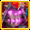 | LR | タナトス | 魔法攻撃力強化 | 20 | 魔法致命打 | 10 | 魔法攻撃力低下 | 10 |
 |
LR | ハーモニー | 与魔法ダメージ吸収 | 20 | 魔法攻撃力低下 | 10 | 上級スキル | 10 |
| LR | 一ノ瀬はじめ | 上級防御力 | 20 | 強打 | 10 | 魔法強打 | 10 | |
| 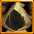 | LR | ゴールド・エンペラー | 最終ダメージ | 20 | 強打 | 10 | 上級状態異常抵抗力 | 10 |
[2] 各クリーチャーパッシブの性能一覧
| クリーチャー効果名 | 1段階効果 | 上昇量 | 50Lv | 2段階必要Lv | 2段階効果 | 20Lv～ | 30Lv~ | 40Lv～ | 50Lv | 3段階必要Lv | 3段階効果 | 30Lv～ | 40Lv～ | 50Lv | 備考 | 階級 |
|---|---|---|---|---|---|---|---|---|---|---|---|---|---|---|---|---|
| PVP攻撃力 | PVP時、攻撃力増加 | Lv×0.6％ | 40% | 20 | 攻撃速度 | 10% | 20% | 30% | 50% | 30 | PVP防御 | 5% | 10% | 15% | - | 上級スキル |
| PVP防御力 | PVP時、防御力増加 | Lv×0.6％ | 40% | 20 | 最大HP | 10% | 20% | 30% | 50% | 30 | PVP攻撃 | 5% | 10% | 15% | - | 上級スキル |
| スキルクールタイム減少 | スキルクールタイム[n]％減少 | Lv*1% | 30% | 20 | 最大CP | 450 | 550 | 650 | 800 | 30 | スキルレベル | 1 | 2 | 3 | Lv24時、CT減少25% | 一般スキル |
| アンデッド型ダメージ | アンデッド型キャラクターに追加で[n]％のダメージを与える。 | 19+Lv*1.5% | 100 | 20 | ダメージ | 10% | 20% | 30% | 50% | 50 | クリティカル率 | × | × | 3 | - | 一般スキル |
| 人間型ダメージ | 人間型キャラクターに追加で[n]％のダメージを与える。 | 19+Lv*1.5% | 100 | 20 | ダメージ | 40% | 60% | 80% | 100% | 50 | 最終ダメージ | × | × | 5% | - | 上級スキル |
| 悪魔型ダメージ | 悪魔型キャラクターに追加で[n]％のダメージを与える。 | 19+Lv*1.5% | 100 | 20 | ダメージ | 10% | 20% | 30% | 50% | 50 | クリティカル率 | × | × | 3 | - | 一般スキル |
| 動物型ダメージ | 動物型キャラクターに追加で[n]％のダメージを与える。 | 19+Lv*1.5% | 100 | 20 | ダメージ | 10% | 20% | 30% | 50% | 50 | クリティカル率 | × | × | 3 | - | 一般スキル |
| 神獣型ダメージ | 神獣型キャラクターに追加で[n]％のダメージを与える。 | 19+Lv*1.5% | 100 | 20 | ダメージ | 10% | 20% | 30% | 50% | 50 | クリティカル率 | × | × | 3 | - | 一般スキル |
| ドロップ率 | アイテムドロップ率 | 10＋Lv×0.5％ | 35% | 20 | ユニークアイテムドロップ確率 | 10% | 20% | 30% | 40% | 30 | 着用時、モンスター討伐経験値 [n]％ 追加獲得 | 10% | 20% | 30% | - | 一般スキル |
| 経験値 | 着用時、モンスター討伐経験値 [n]％ 追加獲得 | 9＋Lv×1％ | 60% | 20 | ユニークアイテムドロップ確率 | 10% | 20% | 30% | 40% | 30 | アイテムドロップ率 | 10% | 20% | 30% | - | 一般スキル |
| 移動速度 | 移動速度 | Lv×2％ | 100 | 20 | 力 | 30 | 50 | 70 | 100 | 50 | 回避率 | × | × | 5% | - | 一般スキル |
| 攻撃速度 | 攻撃速度 | 11＋Lv×1％ | 70 | 30 | 敏捷 | × | 50 | 70 | 100 | 40 | 運 | × | 50 | 150 | - | 一般スキル |
| 命中率 | 命中率 | Lv×0.5％ | 30 | 20 | 敏捷 | 30 | 50 | 70 | 100 | 40 | 運 | × | 50 | 150 | - | 一般スキル |
| 回避率 | 回避率 | 0.2+Lv*0.2％ | 15 | 20 | 敏捷 | 30 | 50 | 70 | 100 | 40 | 運 | × | 50 | 150 | - | 一般スキル |
| 火抵抗力 | 火 抵抗 | 4+Lv*1% | 55 | 20 | 知恵 | 30 | 50 | 70 | 100 | 40 | 健康 | × | 50 | 150 | - | 一般スキル |
| 水抵抗力 | 水 抵抗 | 4+Lv*1% | 55 | 20 | 知恵 | 30 | 50 | 70 | 100 | 40 | 健康 | × | 50 | 150 | - | 一般スキル |
| 風抵抗力 | 風 抵抗 | 4+Lv*1% | 55 | 20 | 知恵 | 30 | 50 | 70 | 100 | 40 | 健康 | × | 50 | 150 | - | 一般スキル |
| 大地抵抗力 | 大地 抵抗 | 4+Lv*1% | 55 | 20 | 知恵 | 30 | 50 | 70 | 100 | 40 | 健康 | × | 50 | 150 | - | 一般スキル |
| 光抵抗力 | 光 抵抗 | 4+Lv*1% | 55 | 20 | 知恵 | 30 | 50 | 70 | 100 | 40 | 健康 | × | 50 | 150 | - | 一般スキル |
| 闇抵抗力 | 闇 抵抗 | 4+Lv*1% | 55 | 20 | 知恵 | 30 | 50 | 70 | 100 | 40 | 健康 | × | 50 | 150 | - | 一般スキル |
| 火強化 | 火属性攻撃力を[n]％強化させる。 | 2＋Lv×1％ | 55 | 20 | ターゲットの火の抵抗を[n]％弱化させる。 | 5% | 6% | 7% | 10% | 40 | 魔法致命打 | × | 3% | 5% | - | 一般スキル |
| 火低下 | ターゲットの火の抵抗を[n]％弱化させる。 | 2.6＋Lv×0.6％ | 35 | 20 | 火属性攻撃力を[n]％強化させる。 | 5% | 10% | 15% | 20% | 40 | 魔法致命打 | × | 3% | 5% | - | 一般スキル |
| 水強化 | 水属性攻撃力を[n]％強化させる。 | 2＋Lv×1％ | 55 | 20 | ターゲットの水の抵抗を[n]％弱化させる。 | 5% | 6% | 7% | 10% | 40 | 魔法致命打 | × | 3% | 5% | - | 一般スキル |
| 水低下 | ターゲットの水の抵抗を[n]％弱化させる。 | 2.6＋Lv×0.6％ | 35 | 20 | 水属性攻撃力を[n]％強化させる。 | 5% | 10% | 15% | 20% | 40 | 魔法致命打 | × | 3% | 5% | - | 一般スキル |
| 風強化 | 風属性攻撃力を[n]％強化させる。 | 2＋Lv×1％ | 55 | 20 | ターゲットの風の抵抗を[n]％弱化させる。 | 5% | 6% | 7% | 8% | 40 | 魔法致命打 | × | 3% | 5% | - | 一般スキル |
| 風低下 | ターゲットの風の抵抗を[n]％弱化させる。 | 2.6＋Lv×0.6％ | 35 | 20 | 風属性攻撃力を[n]％強化させる。 | 5% | 10% | 15% | 20% | 40 | 魔法致命打 | × | 3% | 5% | - | 一般スキル |
| 大地強化 | 大地属性攻撃力を[n]％強化させる。 | 2＋Lv×1％ | 55 | 20 | ターゲットの大地の抵抗を[n]％弱化させる。 | 5% | 6% | 7% | 10% | 40 | 魔法致命打 | × | 3% | 5% | - | 一般スキル |
| 大地低下 | ターゲットの大地の抵抗を[n]％弱化させる。 | 2.8＋Lv×0.6％ | 35 | 20 | 大地属性攻撃力を[n]％強化させる。 | 5% | 10% | 15% | 20% | 40 | 魔法致命打 | × | 3% | 5% | - | 一般スキル |
| 光強化 | 光属性攻撃力を[n]％強化させる。 | 2＋Lv×1％ | 55 | 20 | ターゲットの光の抵抗を[n]％弱化させる。 | 5% | 6% | 7% | 10% | 40 | 魔法致命打 | × | 3% | 5% | - | 一般スキル |
| 光低下 | ターゲットの光の抵抗を[n]％弱化させる。 | 2.6＋Lv×0.6％ | 35 | 20 | 光属性攻撃力を[n]％強化させる。 | 5% | 10% | 15% | 20% | 40 | 魔法致命打 | × | 3% | 5% | - | 一般スキル |
| 闇強化 | 闇属性攻撃力を[n]％強化させる。 | 2＋Lv×1％ | 55 | 20 | ターゲットの闇の抵抗を[n]％弱化させる。 | 5% | 6% | 7% | 10% | 40 | 魔法致命打 | × | 3% | 5% | - | 一般スキル |
| 闇低下 | ターゲットの闇の抵抗を[n]％弱化させる。 | 2.6＋Lv×0.6％ | 35 | 20 | 闇属性攻撃力を[n]％強化させる。 | 5% | 10% | 15% | 20% | 40 | 魔法致命打 | × | 3% | 5% | - | 一般スキル |
| ペット&召喚獣強化 | ペット&召喚獣の魔法攻撃力 | Lv×1％ | 50 | 20 | ペット&召喚獣の攻撃速度 | 10% | 20% | 30% | 40% | 30 | ペット/召喚獣の全てのステータス | 50 | 100 | 200 | - | 一般スキル |
| ペット&召喚獣攻撃力 | ペット&召喚獣の攻撃力 | Lv×2％ | 100 | 20 | ペット&召喚獣の攻撃速度 | 10% | 20% | 30% | 40% | 30 | ペット/召喚獣の全てのステータス | 50 | 100 | 200 | - | 一般スキル |
| ペット&召喚獣状態異常抵抗 | ペット&召喚獣の異常状態抵抗増加 | Lv×1％ | 50 | 20 | ペット&召喚獣の最大体力 | 5% | 8% | 11% | 15% | 30 | ペット/召喚獣の全てのステータス | 50 | 100 | 200 | - | 一般スキル |
| ペット&召喚獣全てのステータス | ペット/召喚獣の全てのステータス | Lv*10 | 500 | 20 | ペット&召喚獣の攻撃速度 | 10% | 20% | 30% | 40% | 30 | ペット&召喚獣の最大体力 | 5% | 10% | 20% | - | 一般スキル |
| ペット&召喚獣体力 | ペット&召喚獣の最大体力 | Lv×1％ | 50 | 20 | ペット&召喚獣の攻撃力 | 20% | 30% | 40% | 50% | 30 | ペット&召喚獣の異常状態抵抗増加 | 5% | 10% | 20% | - | 一般スキル |
| ペット&召喚獣の魔法致命打増加 | ペット&召喚獣の魔法致命打増加 | ？？？ | ？？？ | 20 | ターゲットの魔法抵抗弱化 | 5% | 6% | 7% | 10% | 30 | スキルレベル | 1 | 2 | 3 | 変換限定。ゲーム内バグで数値が記載されていません。(2019.6.26) | 一般スキル |
| ペット&召喚獣の強打率増加 | ペット&召喚獣の強打率増加 | ？？？ | ？？？ | 20 | ペット&召喚獣の攻撃速度 | 10% | 20% | 30% | 40% | 30 | スキルレベル | 1 | 2 | 3 | 変換限定。ゲーム内バグで数値が記載されていません。(2019.6.26) | 一般スキル |
| 最大体力 | 最大HP | Lv×1％ | 50 | 20 | 防御力 | 5% | 10% | 15% | 20% | 30 | 健康 | 60 | 80 | 100 | - | 一般スキル |
| 最大CP | 最大CP | Lv*50 | 3000 | 20 | カリスマ | 30 | 50 | 70 | 100 | 30 | 最大CP | 5% | 10% | 20% | - | 一般スキル |
| 攻撃力 | 攻撃力 | 6＋Lv×4％ | 210 | 20 | クリティカル | 5% | 8% | 11% | 20% | 30 | 攻撃速度 | 10% | 20% | 30% | - | 一般スキル |
| 防御力 | 防御力 | Lv×2％ | 100% | 20 | 最大HP | 5% | 10% | 15% | 20% | 30 | 健康 | 60 | 80 | 100 | - | 一般スキル |
| クリティカルダメージ | クリティカルダメージ増加 | 4+Lv*0.8% | 50 | 20 | クリティカル | 5% | 10% | 15% | 20% | 30 | ダブルクリティカルダメージ増加 | 5% | 7% | 10% | - | 一般スキル |
| ダブルクリティカルダメージ | ダブルクリティカルダメージ増加 | 9+Lv*0.8% | 50% | 20 | クリティカル | 10% | 15% | 20% | 30% | 30 | 敵致命打減少 | 5% | 7% | 10% | - | 上級スキル |
| クリティカル確率 | クリティカル | 1+Lv*0.5% | 30 | 20 | 物理攻撃力 | 10% | 15% | 20% | 25% | 30 | クリティカルダメージ増加 | 5% | 10% | 20% | - | 一般スキル |
| クリティカルダメージ減少 | クリティカルダメージ減少 | 10+Lv*0.5% | 40 | 20 | 最大HP | 10% | 20% | 30% | 40% | 30 | ダブルクリティカルダメージ減少 | 5% | 10% | 15% | - | 一般スキル |
| 敵致命打減少 | 敵の致命打抵抗率減少 | 4.5＋Lv×0.5％ | 30% | 20 | クリティカルダメージ増加 | 10% | 15% | 20% | 30% | 30 | ダブルクリティカルダメージ増加 | 5% | 10% | 20% | - | 上級スキル |
| 抵抗力低下防止 | 抵抗値低下防止 | Lv *0.2 | 15 | 20 | 能力値低下防止 | 1% | 2% | 3% | 10% | 30 | すべての能力値 | 20上昇 | 40上昇 | 80上昇 | Lv32で6% | 一般スキル |
| 能力値低下防止 | 能力値低下防止 | Lv *0.2 | 10 | 20 | 抵抗値低下防止 | 1% | 2% | 3% | 5% | 30 | すべての能力値 | 20上昇 | 40上昇 | 80上昇 | Lv32で6% | 一般スキル |
| 人間型魔法ダメージ | 人間型キャラクターに追加で[n]％の魔法ダメージを与える。 | 5＋Lv×1％ | 55% | 20 | 魔法強化 | 10% | 15% | 20% | 30% | 50 | 最終ダメージ | × | × | 5% | - | 上級スキル |
| 魔法強打 | 魔法強打X％増加 | 4.8+Lv*0.2% | 16% | 20 | 運比率上昇 | 運1/レベル6 | 運1/レベル5 | 運1/レベル4 | 運1/レベル3 | 50 | 最終ダメージ | × | × | 5% | 魔法強打：通常の４倍ダメ | 上級スキル |
| 魔法攻撃力強化 | 魔法の攻撃力を[n]％強化させる。 | 2＋Lv×1％ | 55% | 20 | ターゲットの魔法抵抗をX％弱化させる。 | 5% | 10% | 15% | 20% | 40 | 与魔法吸収 | × | 10%の確率で魔法ダメージの3%をHP吸収 | 20%の確率で魔法ダメージの3%をHP吸収 | - | 上級スキル |
| 魔法攻撃力低下 | ターゲットの魔法抵抗をX％弱化させる。 | Lv×0.5％ | 30% | 20 | 魔法強化 | 10% | 15% | 20% | 30% | 40 | 与魔法吸収 | × | 10%の確率で魔法ダメージの3%をHP吸収 | 20%の確率で魔法ダメージの3%をHP吸収 | - | 上級スキル |
| 魔法致命打 | 魔法致命打 | 5+Lv*0.4% | 25% | 20 | 魔法攻撃力を[n]％強化させる。 | 10% | 20% | 30% | 40% | 50 | 魔法強打 | × | × | 5% | 魔法クリティカル：通常の２倍ダメ | 上級スキル |
| 強打 | 強打率 | 5+Lv*0.3％ | 20% | 20 | 運比率上昇 | 運1/レベル6 | 運1/レベル5 | 運1/レベル4 | 運1/レベル3 | 50 | 最終ダメージ | × | × | 5% | - | 上級スキル |
| 被ダメージCPに変換 | ダメージをCPに変換 | 1+Lv*0.5% | 30 | 20 | 最大CP | 15% | 20% | 25% | 30% | 40 | CP獲得ボーナス | × | 3% | 5% | - | 一般スキル |
| 被ダメージ反射 | ダメージ反射 | Lv×2％ | 100 | 20 | 健康 | 20 | 40 | 60 | 80 | 30 | 最大HP | 10% | 15% | 20% | - | 一般スキル |
| 被魔法ダメージ吸収 | 魔法の攻撃力を[n]％強化させる。 | Lv*0.5 | 30% | 20 | 魔法属性ダメージ吸収 | 6% | 8% | 10% | 12% | 40 | ターゲットの魔法抵抗弱化 | × | 5% | 10% | - | 一般スキル |
| 体力吸収 | 物理攻撃力増加 | 40+LV*1% | 100% | 20 | 敵に与えたダメージの[n]％をHP吸収 | 2% | 3% | 4% | 5% | 30 | クリティカルダメージ | 10% | 20% | 30% | - | 一般スキル |
| 与魔法ダメージ吸収 | X％の確率で魔法ダメージの2％をHP吸収 | Lv×1％ | 50%の確率で魔法ダメージの5%をHP吸収 | 20 | 魔法強化 | 10% | 15% | 20% | 30% | 50 | 知識比率上昇 | × | × | 1/レベル2 | - | 上級スキル |
| 獲得CP増加 | CP獲得ボーナス | 5+Lv*0.5% | 35% | 20 | 最大HP | 10% | 20% | 30% | 50% | 30 | 最大CP | 10％ | 20％ | 40％ | 変換限定 | 一般スキル |
| 魔法ダメージ吸収 | 魔法属性ダメージ[n]％吸収 | Lv*0.06％? | 3% | 30 | 魔法強打 | × | 5% | 10% | 15% | 50 | 知識比率上昇 | × | × | 1/レベル2 | 変換限定 | 上級スキル |
| 状態異常抵抗力 | 状態異常抵抗 | Lv*1% | 55% | 20 | ノックバック抵抗 | 10% | 15% | 20% | 30% | 30 | 運 | 50 | 100 | 150 | - | 一般スキル |
| 全ての属性抵抗 | 魔法 抵抗 | Lv*1% | 55% | 30 | 全ての状態異常抵抗 | 10% | 20% | 30% | 40% | 40 | 抵抗値低下防止 | × | 3% | 5% | - | 一般スキル |
| 人間型ダメージ抵抗 | 人間型追加ダメージ抵抗 | 19+Lv*1.5％ | 100% | 20 | 防御力 | 40% | 60% | 80% | 100% | 50 | 最終ダメージ | × | × | 5% | - | 上級スキル |
| すべての能力値 | 全ての能力値 | 17+3*Lv | 200 | 20 | アイテム着用レベル | 20 | 40 | 60 | 80 | 40 | 能力値低下防止 | × | 3% | 5% | 変換限定 | 一般スキル |
| スキル | スキルレベル | 0.1*SLv | 5 | 20 | 全ての能力値 | 20 | 40 | 60 | 80 | 50 | スキルレベル | × | × | 2 | - | 一般スキル |
| 上級スキル | スキルレベル | 2+Lv*0.15 | 10 | 20 | 全ての能力値 | 100 | 150 | 200 | 250 | 50 | スキルレベル | × | × | 5 | - | 上級スキル |
| 上級攻撃力 | 攻撃力 | 94＋Lv×6％ | 400% | 20 | クリティカルダメージ増加 | 20% | 30% | 40% | 60% | 30 | 強打 | 3% | 5% | 8% | - | 上級スキル |
| 上級防御力 | 防御力 | 50+Lv*4% | 250% | 20 | 最大HP | 20% | 30% | 40% | 60% | 50 | 健康比率上昇 | × | × | 1/レベル2 | - | 上級スキル |
| 上級体力 | 最大HP | 50+Lv*2% | 150% | 20 | 防御力 | 40% | 60% | 80% | 100% | 50 | 健康比率上昇 | × | × | 1/レベル2 | - | 上級スキル |
| 上級最大CP | 最大CP | 12*Lv*3% | 200% | 20 | CP獲得ボーナス | 10% | 15% | 20% | 30% | 50 | 威厳比率上昇 | × | × | 1/レベル2 | - | 上級スキル |
| 上級状態異常抵抗力 | 状態異常抵抗 | 70+Lv*1% | 120% | 20 | ノックバック抵抗 | 20% | 30% | 40% | 60% | 30 | 全ての能力値 | 100 | 200 | 300 | - | 上級スキル |
| 上級攻撃速度 | 攻撃速度 | 50＋Lv×3％ | 200 | 20 | クリティカルダメージ増加 | 10% | 20% | 30% | 40% | 50 | 運比率上昇 | × | × | 1/レベル2 | - | 上級スキル |
| 最終ダメージ | 最終ダメージ | 0.5+0.1*lv | 7% | 20 | スキルレベル | 4 | 6 | 8 | 10 | 30 | 敵致命打減少 | 3% | 5% | 8% | 変換限定 | 上級スキル |
| 上級経験値 | 経験値 | 54+1*lv | 120% | 20 | スキルレベル | 2 | 3 | 4 | 6 | 30 | 最終ダメージ | 1% | 2% | 3% | 変換限定 | 上級スキル |
| 上級ドロップ | アイテムドロップ率 | 50+1*lv | 100% | 20 | ユニークドロップ率 | 20% | 30% | 40% | 60% | 30 | 最終ダメージ | 1% | 2% | 3% | 変換限定 | 上級スキル |
その他雑学
2019.6.26現在、上級スキルは24種類、下級スキルは54種類が実装されています。クリーチャーのパッシブ変換使用時には対象となる階級からランダムで抽選されて、付与されるパッシブが決定されます。
クリーチャーパッシブの多くの計算式は、小数点以下が発生した場合の多くは四捨五入で処理されます。
マートン所長の敵致命打抵抗減少Lv16だった所は2019.7.24にてLv5に変更されました。
詳細はこちら
[参考]公式サイト：ネフォンクリーチャーとは
公式サイト：ネフォンクリーチャー一覧
[情報提供協力者] 上条美琴さん